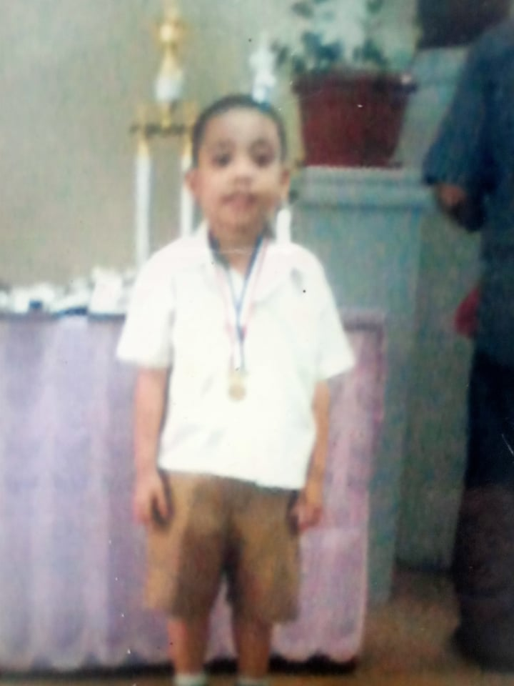
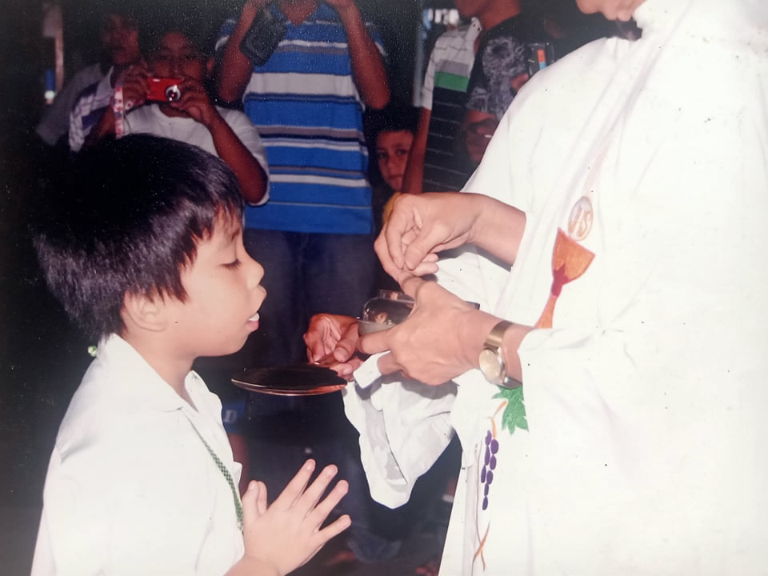

 
My grade school days where my most productive or my golden days in term of studying. Back when I’m in grade 1, I become the 1st honor of my class. I remembered competing with my classmates, my competitors in honorary title, in solving math flashcards. That determined that I was the 1st honor in my class. I belong to 5th section that time but after that, I got moved to 1st section until grade 6. Being in the 1st section is already an achievement and a very good thing to me and my parents. But in the first section, that’s where all the smart kids from different sections are putted, so unfortunately, I failed to get a honorary title since then. Despites that, I maintained my high grades and I even joined MTAP, journalism, and other more organizations back then. That was truly my golden years on studying. Back then, I’m hardworking and enjoyed studying and my life with no worries. I miss that kind of me. I want to go back to that days.